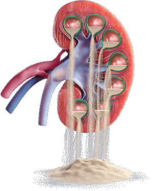

Defination
Nephrology (from Greek nephros "kidney", combined with the suffix -logy, "the study of") is a specialty of adult internal medicine and pediatric medicine that concerns the study of the kidneys, specifically normal kidney function (renal physiology) and kidney disease (renal pathophysiology), the preservation of kidney health, and the treatment of kidney disease, from diet and medication to renal replacement therapy (dialysis and kidney transplantation). The word “renal” is an adjective meaning “relating to the kidneys”, and its roots are French or late Latin. Whereas according to some opinions, "renal" and "nephro" should be replaced with "kidney" in scientific writings such as "kidney medicine" (instead of nephrology) or "kidney replacement therapay", other experts have advocated preserving the use of renal and nephro as appropriate including in "nephrology" and "renal replacement therapy", respectively. [1]
Nephrology also studies systemic conditions that affect the kidneys, such as diabetes and autoimmune disease; and systemic diseases that occur as a result of kidney disease, such as renal osteodystrophy and hypertension. A physician who has undertaken additional training and become certified in nephrology is called a nephrologist.
The term "nephrology" was first used in about 1960, according to the French "néphrologie" proposed by Pr. Jean Hamburger in 1953, from the Greek νεφρός / nephrós (kidney). Before then, the specialty was usually referred to as "kidney medicine."[2]
Scope
Nephrology concerns the diagnosis and treatment of kidney diseases, including electrolyte disturbances and hypertension, and the care of those requiring renal replacement therapy, including dialysis and renal transplant patients. [3][4] The word 'dialysis' is from the mid 19th century: via Latin from the Greek word 'dialusis'; from 'dialuein' (split, separate), from 'dia' (apart) and 'luein' (set free). In other words, dialysis replaces the primary (excretory) function of the kidney, which separates (and removes) excess toxins and water from the blood, placing them in the urine.
Many diseases affecting the kidney are systemic disorders not limited to the organ itself, and may require special treatment. Examples include acquired conditions such as systemic vasculitides (e.g. ANCA vasculitis) and autoimmune diseases (e.g., lupus), as well as congenital or genetic conditions such as polycystic kidney disease.
Patients are referred to nephrology specialists after a urinalysis, for various reasons, such as acute kidney injury, chronic kidney disease, hematuria, proteinuria, kidney stones, hypertension, and disorders of acid/base or electrolytes.
Diagnosis
History and physical examination are central to the diagnostic workup in nephrology. The history typically includes the present illness, family history, general medical history, diet, medication use, drug use and occupation. The physical examination typically includes an assessment of volume state, blood pressure, heart, lungs, peripheral arteries, joints, abdomen and flank. A rash may be relevant too, especially as an indicator of autoimmune disease.
Examination of the urine (urinalysis) allows a direct assessment for possible kidney problems, which may be suggested by appearance of blood in the urine (hematuria), protein in the urine (proteinuria), pus cells in the urine (pyuria) or cancer cells in the urine. A 24-hour urine collection used to be used to quantify daily protein loss (see proteinuria), urine output, creatinine clearance or electrolyte handling by the renal tubules. It is now more common to measure protein loss from a small random sample of urine.
Basic blood tests can be used to check the concentration of hemoglobin, white count, platelets, sodium, potassium, chloride, bicarbonate, urea, creatinine, albumin, calcium, magnesium, phosphate, alkaline phosphatase and parathyroid hormone (PTH) in the blood. All of these may be affected by kidney problems. The serum creatinine concentration is the most important blood test as it is used to estimate the function of the kidney, called the creatinine clearance or estimated glomerular filtration rate (GFR).
It is a good idea for patients with longterm kidney disease to know an up-to-date list of medications, and their latest blood tests, especially the blood creatinine level. In the United Kingdom, blood tests can monitored online by the patient, through a website called RenalPatientView.
More specialized tests can be ordered to discover or link certain systemic diseases to kidney failure such as infections (hepatitis B, hepatitis C), autoimmune conditions (systemic lupus erythematosus, ANCA vasculitis), paraproteinemias (amyloidosis, multiple myeloma) and metabolic diseases (diabetes, cystinosis).
Structural abnormalities of the kidneys are identified with imaging tests. These may include Medical ultrasonography/ultrasound, computed axial tomography (CT), scintigraphy (nuclear medicine), angiography or magnetic resonance imaging (MRI).
In certain circumstances, less invasive testing may not provide a certain diagnosis. Where definitive diagnosis is required, a biopsy of the kidney (renal biopsy) may be performed. This typically involves the insertion, under local anaesthetic and ultrasound or CT guidance, of a core biopsy needle into the kidney to obtain a small sample of kidney tissue. The kidney tissue is then examined under a microscope, allowing direct visualization of the changes occurring within the kidney. Additionally, the pathology may also stage a problem affecting the kidney, allowing some degree of prognostication. In some circumstances, kidney biopsy will also be used to monitor response to treatment and identify early relapse. A transplant kidney biopsy may also be performed to look for rejection of the kidney.